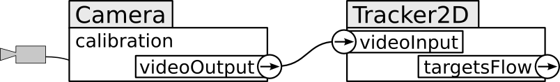
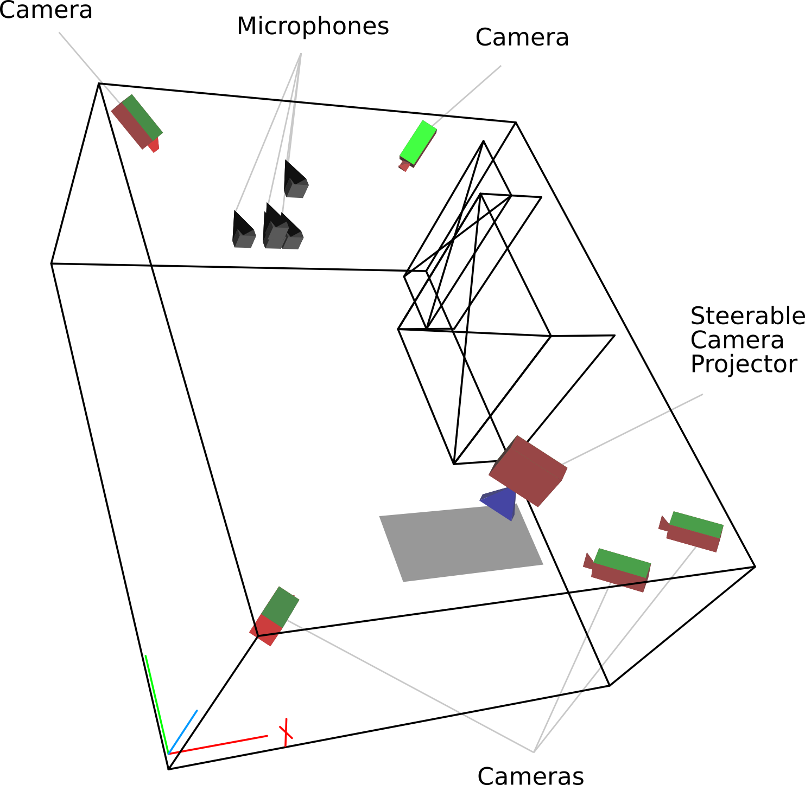
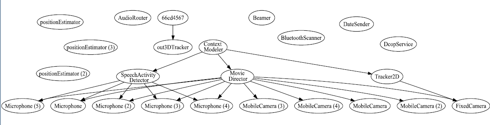

O3MiSCID, a Middleware
for pervasive computing
PRIMA - INRIA Rhône-Alpes
Motivations
- Stimulating synergy in/between research teams
- Software reuse
- Software interoperability
- Simplifying conception of distributed applications
- Unified communication means
- Programmatic facilities
- Enabling higher level concepts
Outline
- Middleware presentation
- Abstract architecture
- Detailed architecture
- Examples
- Summary
Middleware Requirements
- Attractiveness and availability
- Available to everyone
- Low threshold, high ceiling
- Network efficiency
- High bandwidth
- Low latency
Middleware Requirements
- Robustness
- Ease of configuration
- Extensibility
- Context awareness
- Autonomous computing
Outline
- Requirements
- Middleware presentation
- Examples
- Summary
O3MiSCID
- Object-Oriented
- Opensource
- Middleware for
- Service Connection
- Inspection and
- Discovery
Abstract Layered Architecture
- Layer 1: Network Communications
- Splitting network streams in messages
- Arbitrary message content
- Layer 2: Services
- Service declaration and advertisement
- Service discovery and inspection
- Layer 3: Ontology
- Semantic service description
Architecture

Outline
- Requirements
- Middleware presentation
- Examples
- Summary
L1: Network Communications
- Basic Interconnection Protocol (BIP)
- Splits the communication stream into messages
- 34-byte header
- Allows arbitrary content type
- Programmatic facilities
- Communication channel instantiation
- Message interpretation:
string, xml, binary
L2: Services - Declaration
- Black box software unit
- Communication channels
- Input, output, bidirectional
- Variables
- Access rights
- Remote modifications, modification subscription
- Control channel
- Inspection, variable related queries
Example Services

Example Declaration
service = factory.create("Camera");
service.addConnector("videoOutput",
"Frame by frame output",
ConnectorType.OUTPUT);
service.addVariable("calibration",
"Matrix4x4",
VariableAccessType.READ);
...
L2: Services - Discovery
- DNS-SD over multicast DNS
- Distributed service advertisement
- Quick connection/disconnection notifications
- Service selection using filters on
- Service name, hostname, owner
- Channel presence, description
- Variable presence, value
- Custom condition
Example Discovery
service.addConnectorListener( "videoInput", this);
cameraProxy = service.findService( and(
nameIs("Camera"),
ownerIs("John")));
service.connectTo("videoInput", cameraProxy, "videoOutput");
L3: Ontology, Work In Progress ...
- Semantic description of services
- Currently: Simple class hierarchy
- Single inheritance
- Single class belonging
- Class fields (variables)
- Service lookup based on
- Service class
- Service fields values
Implementation
- Cross-language and cross-platform
- Java and OSGi bundle
- Portable C++ (Windows, Linux, MacOSX)
- Tcl
- APIs (programming interfaces)
- Close to each other
- Exploiting particularities of each language
- User centered abstractions
Outline
- Requirements
- Middleware presentation
- Abstract architecture
- Detailed architecture
- Summary
Plotting Room Configuration
- Browse for interesting hardware services
- Query interesting parameters (position, orientation, ...)
- Render the room with its hardware

3D Tracking System
- Services
- One detector/estimator per camera
- A 3D Tracker service
- Distributed processing
- Set up using service discovery
System Monitoring
- Browse for interesting services
- Inspect their interconnections
- Automatically generate a graph

Outline
- Requirements
- Middleware presentation
- Abstract architecture
- Detailed architecture
- Examples
Summary
- Motivations
- Stimulate synergy in/between research teams
- Simplify distributed application design
- Layered architecture
- L1: Network communications
- L2: Services declaration and discovery
- L3: Semantic service description
Summary (Cont'd)
- Implementation
- User centered design (ease of use, high availability)
- Open source release (publicly available)
- Status
- Upper layer (L3) is work in progress, lower ones are stable
- Good adoption rate
- Good base for future work
Thank You For Your Attention
- URL: http://omiscid.gforge.inria.fr/
- Main contributors (non-ordered):
- Dominique Vaufreydaz
- Sébastien Pesnel
- Rémi Emonet
- Julien Letessier
- Patrick Reignier
- ¿ Questions ?